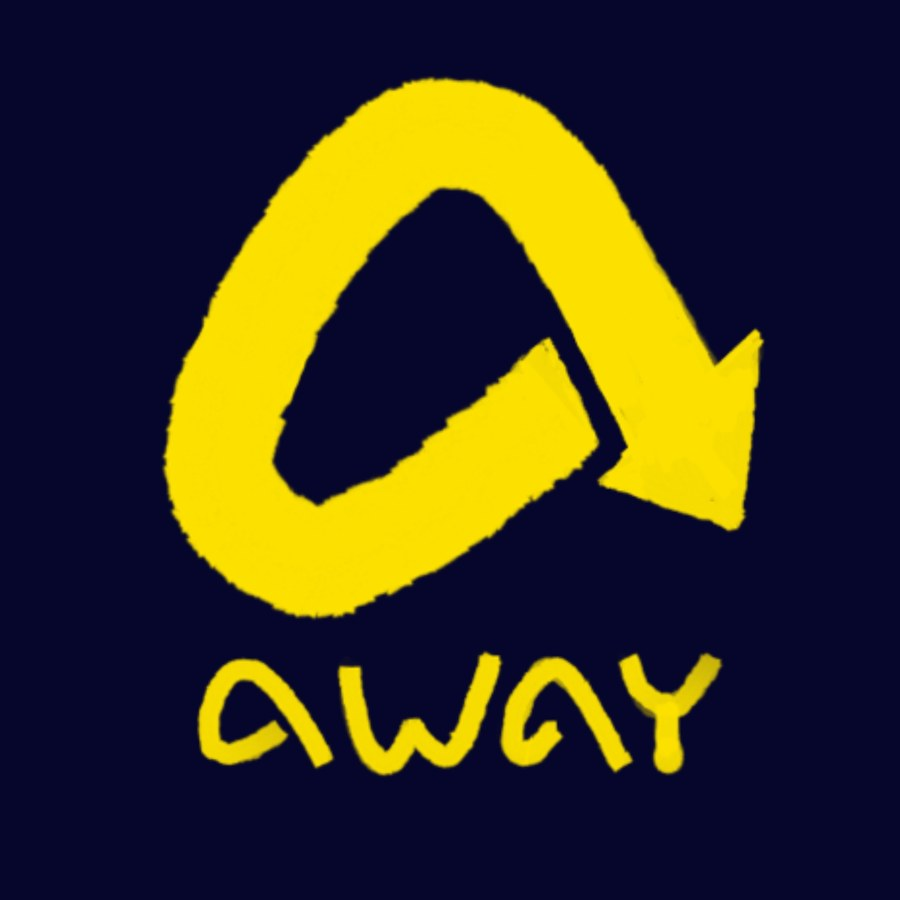
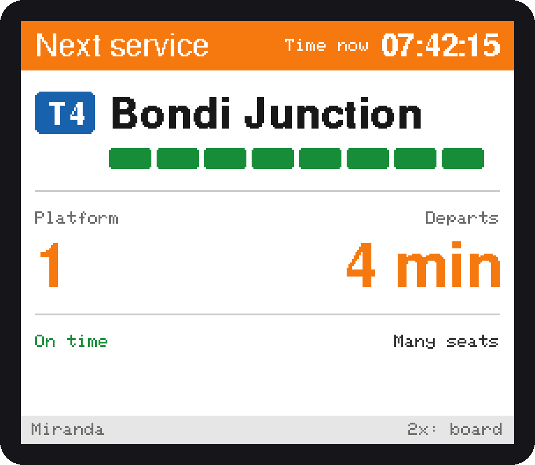
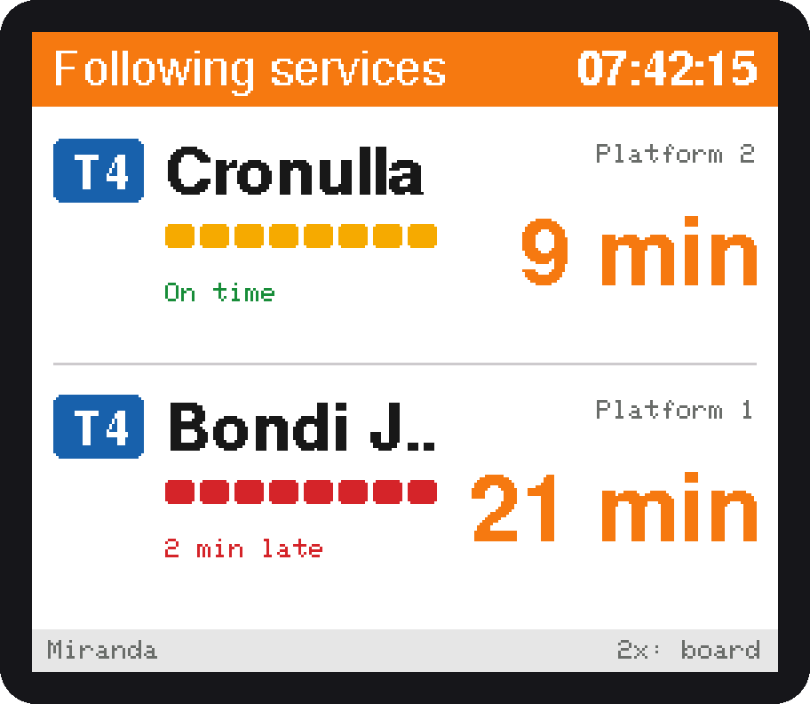
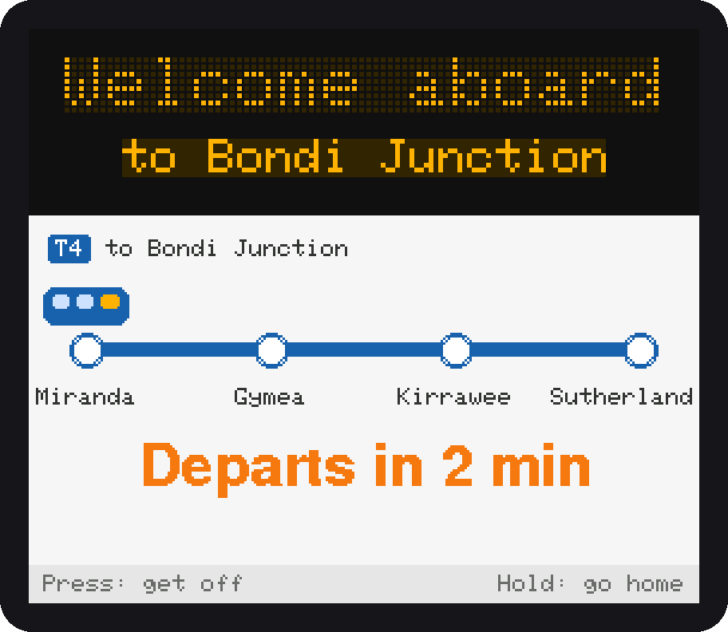
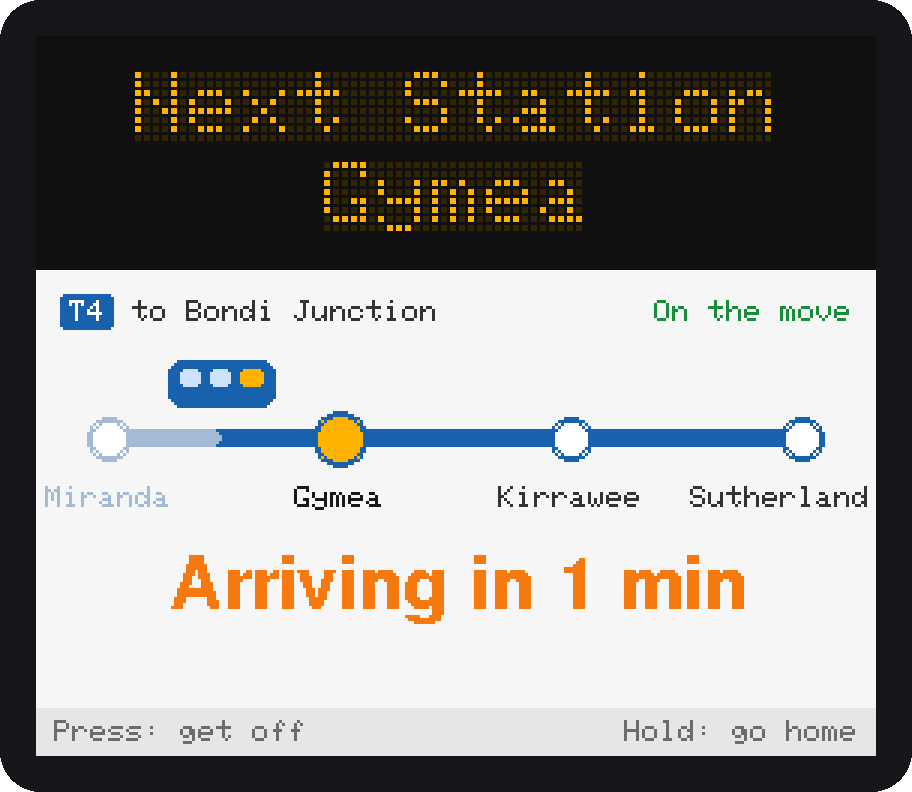
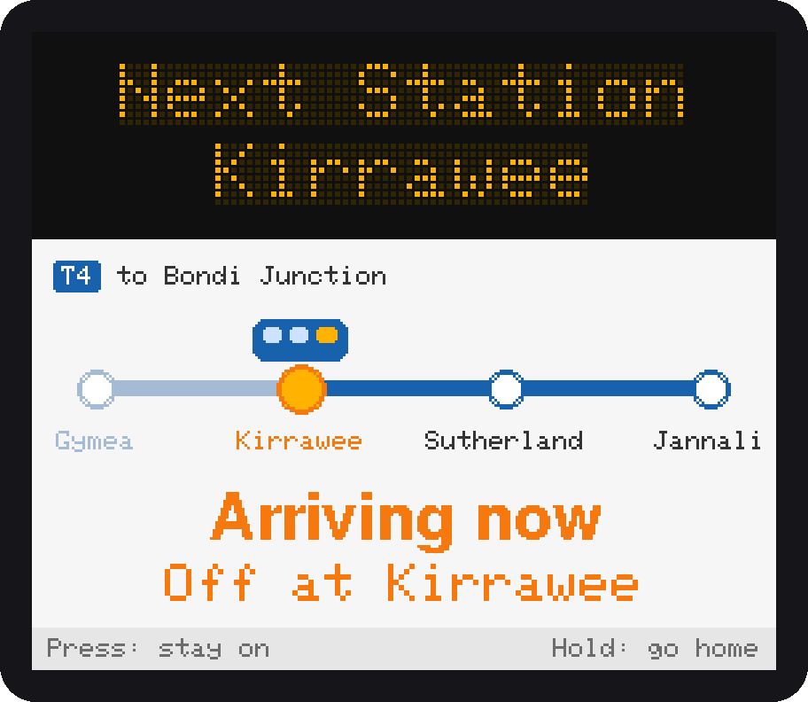

A little desk display that shows when the next trains leave Miranda, NSW, so even when you're away from home you can keep an eye on the train.
Software working · waiting for hardware





Rendered from the display's own drawing code at three times its real size, with sample times.
An ESP32-S3 pulls live departures from the Transport for NSW API every 30 seconds and draws them on a 1.69" screen, laid out like the boards at Sydney Trains stations.
Countdowns use live estimates, so late trains show as late. A row of little carriages shows how busy the next train is: green, amber or red.
One button turns the board into a ride-along. Board a real train, follow it stop by stop on a moving line diagram, and get off anywhere on the network.
An amber dot-matrix banner says "Welcome aboard", then "Next Station" once the train leaves, just like on board.
The parts are still in the mail, so I tested everything in Wokwi, an online ESP32 simulator with real internet. It pulled live Sydney trains, boarded a T4 to Bondi Junction, got off at Gymea and rode to the end of the line.
It also caught real bugs before any hardware arrived: downloads timing out, trip data too deeply nested for the JSON parser, missed button presses and overlapping text.
A wedge shape with the screen on the vertical front and the board lying flat in the base, at 90° to the screen. LED on top, charging port at the back, and the Away arrow embossed on both sides.